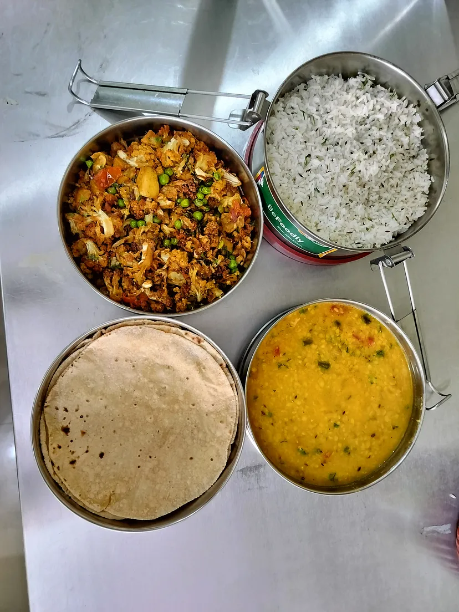

Overcoming Homesickness through Homely Lunch Box Service in Bangalore
Away from home in a busy city like Bangalore can be both exciting and challenging. While the city’s lively culture, thriving tech scene, and endless opportunities attract thousands of students and professionals, the experience often comes with a tinge of homesickness.
BeFoodly makes it Just like Mom’s Magic
Home-cooked food is one of the most common longings, which brings comfort and a sense of belonging. Enter BeFoodly, a homely lunch box service in Bangalore designed to bridge this emotional gap with every meal.
The Essence of BeFoodly: Homely and Healthy Lunchbox Service in Bangalore
BeFoodly isn’t just another tiffin service; it’s a culinary embrace that reminds you of your mother’s kitchen. Each meal is meticulously prepared with love and care, using fresh ingredients and traditional recipes that take you back to your roots. The service is not just about food; it’s about creating an emotional connection, making sure that every bite brings a sense of home, no matter where you are. In fact, BeFoodly facilitates both individual food service and corporate meal services in Bangalore. Visit our Instagram page to get regular updates on our highlights!
Understanding Homesickness
Homesickness is more than just missing home; it’s a profound longing for familiarity, comfort, and the emotional security home provides. For many, food plays a crucial role in this equation. The aroma of freshly cooked dal, the taste of a perfectly spiced curry, or the simplicity of a roti can evoke powerful memories and provide solace. BeFoodly understands this intrinsic connection and strives to deliver that homely touch in every lunch box.
Tailoring to Diverse Palates
Bangalore is a melting pot of cultures, with residents hailing from various parts of India and beyond. Recognizing this diversity, BeFoodly offers a wide range of menu options that cater to different regional tastes. Additionally, their customizable meal plans ensure that everyone finds something that resonates with their taste buds and memories.
BeFoodly Meals
Convenience and Quality
In the fast-paced life of Bangalore, convenience is key. BeFoodly offers an easy-to-use subscription model where you can choose your meal plans, specify dietary preferences, and schedule deliveries conveniently. The meals are packed in eco-friendly containers, maintaining hygiene and freshness. The efficient delivery system ensures that your lunch box arrives on time every time.
Is BeFoodly a Healthy Choice?
Beyond the emotional comfort, BeFoodly is committed to providing nutritious meals. In an age where fast food and unhealthy eating habits are rampant, BeFoodly stands out by offering balanced diets that nourish the body and mind. The use of fresh, locally sourced ingredients and home-style cooking methods ensures that each meal is both wholesome and delicious!
Building a Community
BeFoodly is more than just a food delivery service; it’s a community. Through various initiatives, BeFoodly fosters a sense of belonging among its customers. Whether a special festive menu or facilitating late-night orders during important T20 or FIFA matches, BeFoodly allows you to enjoy your meals hassle-free.
Testimonials: Voices of Comfort
The true impact of BeFoodly is best reflected in the words of its customers. Visit our BeFodly website to view testimonials that highlight the difference BeFoodly has made in their lives, some of which are:
Amazing experience to get home-cooked food, really happy with the food quality and the taste it always gives the north vibes. Happy to see the packaging as well. — Ankit
The food was very homely and the taste was bang on! I am hooked on this kitchen now! Dal makhani was absolutely amazing. And moong halwa is a must-try from this kitchen. — Laxmikant Mishra
The meal subscription plan of BeFoodly is a must-try! With BeFoodly, I never have to worry about the quality, freshness, and not to mention the homely feeling it always gives me. — Sumana Ghosh
BeFoodly: Solution to your “Best Lunchbox Service Near Me”
Homesickness can be challenging, but BeFoodly helps ease that transition becomes a lot easier. By providing homely, nutritious meals with a touch of love and care, BeFoodly helps individuals overcome homesickness and find comfort in the bustling city of Bangalore. So, the next time you miss home, remember that a taste of it is just a lunch box away with BeFoodly.
